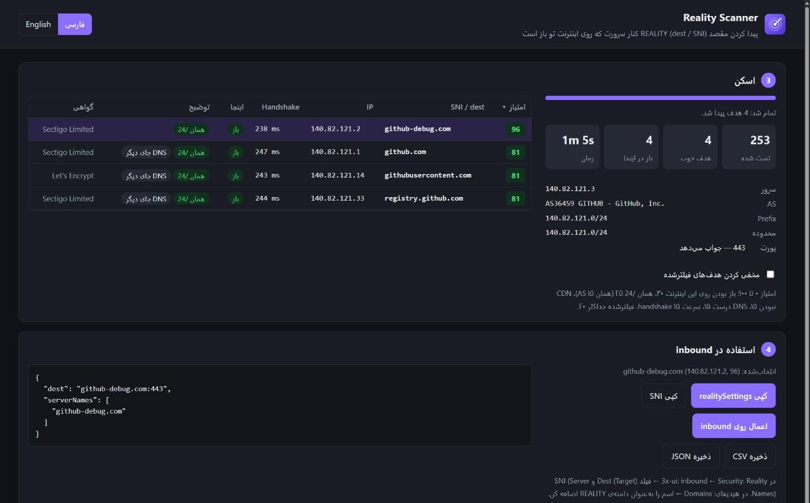
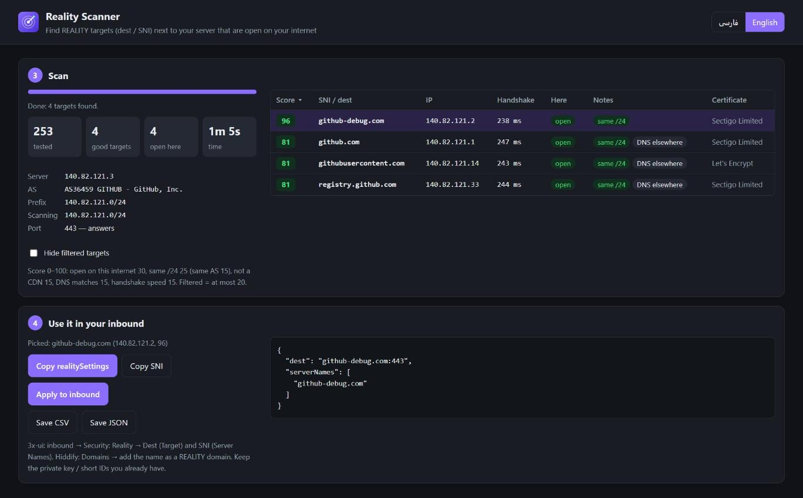

مقصد مناسب REALITY، کنار سرور خودتان
The right REALITY target, next to your own server
Reality Scanner سایتهای کنار سرور Xray شما را پیدا میکند، هر کدام را مثل خود Xray چک میکند (TLS 1.3، X25519، HTTP/2، گواهی معتبر) و میسنجد که اپراتور شما SNI آن را قطع نمیکند. بهترینها را امتیاز میدهد و با یک کلیک در inbound پنل 3x-ui مینشاند.
Reality Scanner finds the sites next to your Xray server, checks each one the way Xray does (TLS 1.3, X25519, HTTP/2, a valid certificate) and tests that your ISP doesn't cut its SNI. It scores the best ones and puts your pick into a 3x-ui inbound in one click.


چطور کار میکند
How it works
IP سرور و پورت REALITY را بدهید (یا inbound را از پنل بخوانید) و «شروع اسکن» را بزنید.
Give it your server's IP and REALITY port (or load the inbound from your panel) and press Start scan.
پیدا کردن همسایهها
Find the neighbours
IPهای کنار سرور (همان /24، بعد شبکهٔ همان AS) را میگردد، گواهی هر کدام را میخواند و اسم سایتها را درمیآورد. میتوانید لیست دامنهٔ خودتان را هم بدهید.
It walks the IPs next to your server (same /24, then the rest of its AS), reads each certificate and takes the site names from it. You can also give it your own domain list.
چک مثل Xray
Check it like Xray
هر اسم باید TLS 1.3، HTTP/2، گواهی معتبر برای همان اسم و یک ClientHello فقط با X25519 را قبول کند؛ وگرنه REALITY با آن کار نمیکند.
Each name must take TLS 1.3, HTTP/2, a valid certificate for that name and a ClientHello offering only X25519, or REALITY won't work with it.
تست فیلتر
Filter test
اسم را بهعنوان SNI از اینترنت شما به سرور خودتان میفرستد. اگر اپراتور قطعش کند، «فیلتر» علامت میخورد. SNI router جلوی پورت را هم تشخیص میدهد.
It sends the name as SNI from your internet to your own server. If your ISP cuts it, it's marked filtered. It also spots an SNI router sitting in front of the port.
امتیاز و استفاده
Score and use
باز بودن، همان /24 یا AS، CDN نبودن، DNS درست و سرعت هندشیک امتیاز میگیرند. realitySettings آماده را کپی کنید یا مستقیم در پنل اعمال کنید.
Open here, same /24 or AS, not a CDN, DNS match and handshake speed earn points. Copy the ready realitySettings or apply it to your panel directly.
امکانات
Features
مقصد نزدیک به سرور
A target close to your server
مقصدی که در همان شبکهٔ سرور است ترافیک طبیعیتری میسازد و تأخیر اضافه ندارد. اطلاعات سرور (AS، prefix) از RIPEstat میآید.
A target in your server's own network looks more natural and adds no latency. Server facts (AS, prefix) come from RIPEstat.
فیلتر روی اینترنت شما
Filtering on your internet
برنامه روی گوشی یا کامپیوتر شما، روی همان اینترنتی که کاربرانتان دارند اجرا میشود؛ پس نتیجهٔ فیلتر واقعی است، نه حدس.
It runs on your phone or PC, on the same internet your users have, so the filter result is real, not a guess.
پنل 3x-ui و Hiddify
3x-ui and Hiddify panels
inboundهای REALITY را از پنل میخواند، dest فعلی را تست میکند و مقصد جدید را با یک کلیک روی 3x-ui مینویسد؛ با دکمهٔ برگرداندن.
Loads the REALITY inbounds from your panel, tests the current dest and writes a new target to 3x-ui in one click, with an undo button.
تشخیص CDN و DNS
CDN and DNS checks
اسمهایی که پشت CDN هستند یا DNSشان به IP دیگری میرود مشخص میشوند تا مقصد پایدار انتخاب کنید.
Names behind a CDN, or whose DNS points somewhere else, are marked so you can pick a stable target.
آپدیت خودکار
Update check
نسخهٔ جدید که بیاید، برنامه خبر میدهد (روی اندروید با اعلان)، با لیست تغییرات و دکمهٔ دانلود.
When a new build is out the app tells you (with a notification on Android), with the list of changes and a download button.
محلی و امن
Local and private
همهچیز روی دستگاه خودتان اجرا میشود. رمز پنل فقط اگر خودتان بخواهید روی همین دستگاه ذخیره میشود و جز به پنل خودتان جایی فرستاده نمیشود.
Everything runs on your device. The panel password is saved on this device only if you ask, and goes nowhere but your own panel.
کار با پنل
Working with your panel
3x-ui (Sanaei)
- در مرحلهٔ ۲ «از پنل من» را بزنید، آدرس پنل (با مسیر مخفی) و نام کاربری و رمز، یا توکن API را بدهید.
- inbound را انتخاب کنید؛ IP سرور و پورت خودکار پر میشوند. «تست dest فعلی» نشان میدهد مقصد فعلی هنوز باز است یا نه.
- اسکن کنید، یک ردیف را انتخاب کنید و «اعمال روی inbound» را بزنید. فقط dest و serverNames عوض میشوند؛ کلیدها، short idها و کلاینتها دست نمیخورند.
- In step 2 choose “From my panel” and give the panel address (with its secret path) and user name + password, or an API token.
- Pick the inbound; the server IP and port fill in. “Test the current dest” shows whether today's target is still open.
- Scan, pick a row and press “Apply to inbound”. Only dest and serverNames change; keys, short IDs and clients stay.
Hiddify
لینک کامل ادمین (با uuid) را بدهید. دامنههای REALITY پنل خوانده و تست میشوند. اعمال خودکار فعلاً فقط برای 3x-ui است؛ در هیدیفای اسم را دستی بهعنوان دامنهٔ REALITY اضافه کنید.
Give the full admin link (with the uuid). The panel's REALITY domains are loaded and tested. Automatic apply is 3x-ui only for now; in Hiddify add the name as a REALITY domain by hand.
"realitySettings": {
"dest": "github-debug.com:443",
"serverNames": ["github-debug.com"]
}
همین بلوک را برنامه برای ردیف انتخابشده آماده میکند.
The app builds this block for the row you pick.
نحوهٔ اجرا
How to run
ویندوز
Windows
- Reality-Scanner.exe را دانلود کنید و رویش دوبار کلیک کنید. پایتون لازم نیست.
- صفحهٔ برنامه در مرورگر باز میشود. IP سرور و پورت REALITY را بدهید و شروع اسکن را بزنید.
- با بستن صفحه، برنامه هم خودش بسته میشود.
- Download Reality-Scanner.exe and double-click it. No Python needed.
- The app opens in your browser. Enter your server IP and REALITY port and press Start scan.
- Close the page and the program exits by itself.
اندروید
Android
- Reality-Scanner.apk را دانلود و نصب کنید (اجازهٔ «نصب از منابع ناشناس» را بدهید).
- برنامه را باز کنید؛ اگر اجازهٔ اعلان خواست، Allow بزنید تا آپدیتها را خبر بدهد.
- گوشی مستقیم روی اینترنت سیمکارت است: برای مقایسهٔ اپراتورها فقط سیمکارت را عوض کنید.
- Download and install Reality-Scanner.apk (allow “install unknown apps”).
- Open it; allow notifications so it can tell you about updates.
- The phone is on its SIM's internet directly: to compare ISPs just switch SIM.
امتیاز چطور حساب میشود؟
How the score works
| معیار | Check | امتیاز | Points |
|---|---|---|---|
| روی اینترنت شما باز است (تستنشده: ۱۲)Open on your internet (not tested: 12) | 30 | ||
| همان /24 سرور (همان AS: ۱۵)Same /24 as the server (same AS: 15) | 25 | ||
| پشت CDN نیستNot behind a CDN | 15 | ||
| DNS اسم به همان IP میرسدThe name's DNS points to that IP | 15 | ||
| سرعت هندشیکHandshake speed | 15 |
مقصد فیلترشده حداکثر ۲۰ امتیاز میگیرد.
A filtered target gets at most 20.
سؤالهای رایج
FAQ
چرا روی سرور اجرا نمیشود؟
Why not run it on the server?
فیلتر روی مسیر اینترنت کاربر اتفاق میافتد، نه روی سرور. فقط از اینترنت خود شما میشود فهمید یک SNI قطع میشود یا نه.
Filtering happens on your users' internet path, not on the server. Only your own internet can tell whether an SNI gets cut.
همه «فیلتر» شدند!
Everything shows filtered!
اگر جلوی پورت REALITY یک SNI router (nginx، haproxy، پراکسی DNS) باشد که فقط اسمهای شناختهشده را رد میکند، تست فیلتر غلط میشود. inbound را از پنل بخوانید تا برنامه این را تشخیص دهد، یا پورت را ۰ بگذارید.
If an SNI router (nginx, haproxy, a DNS proxy) in front of the REALITY port only passes names it knows, the filter test is wrong. Load the inbound from your panel so the app can spot it, or set the port to 0.
روی اندروید روت لازم دارد؟
Does Android need root?
نه. APK مثل هر برنامهٔ دیگری نصب میشود و همان صفحه را داخل خودش اجرا میکند. فایلهای CSV و JSON در پوشهٔ Download ذخیره میشوند.
No. The APK installs like any app and runs the same page inside it. CSV and JSON files are saved to your Download folder.